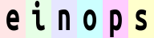

einsum
Einsum是爱因斯坦求和约定(Einstein summation convention)，提供一种间接的方式来计算多维线性代数数组运算，可以在计算表达式中省去求和符号。
函数原型
numpy.einsum(subscripts, *operands, out=None, dtype=None, order='K', casting='safe', optimize=False)
参数：
subscripts: str: 将求和的下标指定为逗号分隔的下标标签列表operands: list of array_like: 操作的数组out: ndarray, optional: 输出数组，可选dtype: {data-type, None}, optional: 使用指定的数据类型计算，默认为Noneorder: {'C','F','A','K'}, optional: 输出的内存布局，默认为’K'casting: {'no','equiv','safe','same_kind','unsafe'}, optional: 控制可能发生的数据转换类型，默认为’safe'optimize: {False,True,'greedy','optimal'}, optional: 控制是否进行中间过程优化，默认为False
返回值：
output: ndarray: 计算结果
详解einsum表达式
- 写出数学表达式
对于以下einsum表达式：
A = np.arange(2*3*4).reshape(2,3,4)
C = einsum('ijk->jik', A)
该表达式的数学表达式为： $$ C_{jk}=A_{ijk} $$
- 补充求和符号$\sum$
求和符号的下标为数学表达式右边的下标剪左边的下标，在这个例子中，求和下标为i。 $$ C_{jk}=\sum_i{A_{ijk}} $$
- 用for循环复现
求和的部分用+=即可
i,j,k=A.shape[0],A.shape[1],A.shape[2]
C_ = np.zeros((j,k))
for i_ in range(i):
for j_ in range(j):
for k_ in range(k):
C_[j_,k_] += A[i_,j_,k_]
C,C_
(array([[12, 14, 16, 18],
[20, 22, 24, 26],
[28, 30, 32, 34]]),
array([[12., 14., 16., 18.],
[20., 22., 24., 26.],
[28., 30., 32., 34.]]))
特殊写法补充
-
若等号右边是一个标量，则
->右边可以什么都不写： $$ b=\sum_{ijk}{A_{ijk}} $$>>> A = np.arange(1*2*3).reshape(1,2,3) >>> b = einsum('ijk->', A) >>> b 15
举例
例如矩阵$A=\begin{bmatrix}0& 1& 2\\3& 4& 5\\6& 7& 8\end{bmatrix}$,$B=\begin{bmatrix}0& 1& 2\\3& 4& 5\end{bmatrix}$，
-
求矩阵的迹(trace)：与
np.trace等价>>> einsum('ii', a) # einsum(a, [0,0]) 12einsum(a, [0,0])中的[0,0]与'ii'对应 -
提取矩阵对角线元素：与
np.diag等价>>> einsum('ii->i', a) # einsum(a, [0,0], [0]) array([0, 4, 8])‘ii->i’表示$b_i=\sum_{i}{A_{ii}}$
-
在某一轴上求和：与
np.sum(a, axis)等价>>> einsum('ij->i', a) # einsum(a, [0,1], [0]), np.sum(a, axis=1) array([ 3, 12, 21])‘ij->i’表示$b_i=\sum_{j}{A_{ij}}$，即行求和
>>> einsum('ij->j', a) # einsum(a, [0,1], [1]), np.sum(a, axis=0) array([ 9, 12, 15])‘ij->j’表示$b_j=\sum_{i}{A_{ij}}$，即列求和
-
高维数组对单一轴求和可以结合省略号(ellipsis, …)完成
>>> np.einsum('...j->...',a) # einsum(a, [Ellipsis,1], [Ellipsis]) array([ 3, 12, 21])‘…j->…‘与’ij->i’等价
-
矩阵转置或调整矩阵轴顺序：与
np.transpose等价>>> einsum('ji', c) # einsum('ij->ji', c), einsum(c, [1,0]) array([[0, 3], [1, 4], [2, 5]])$B_{ij}=A_{ji}$
-
向量内积(结果为标量)：与
np.inner等价>>> np.einsum('i,i',b,b) # einsum(b,[0],b,[0]) 5 -
向量外积：与
np.outer等价>>> einsum('i,j', b, b) # einsum(b,[0],b,[1]) array([[0, 0, 0], [0, 1, 2], [0, 2, 4]]) -
矩阵向量相乘：与
np.dot等价>>> einsum('ij,j',a,b) # einsum(a, [0,1], b, [1]),einsum('...j,j', a, b),np.dot(a,b) array([ 5, 14, 23]) >>> einsum('ij,i',a,b) # einsum(a, [0,1], b, [0]),einsum('i...,i', a, b),np.dot(b,a) array([15, 18, 21])‘ij,j’表示$c_i=\sum_{j}{A_{ij}\cdot b_j}$
-
标量乘法：与
np.multiply等价>>> einsum('..., ...', 3, c) # einsum(',ij', 3, c) array([[ 0, 3 , 6 ], [ 9, 12, 15]]) -
张量收缩：与
np.tensordot等价>>> a = np.arange(60.).reshape(3,4,5) >>> b = np.arange(24.).reshape(4,3,2) >>> einsum('ijk,jil->kl', a, b) # einsum(a, [0,1,2], b, [1,0,3], [2,3]),np.tensordot(a,b, axes=([1,0],[0,1])) array([[4400., 4730.], [4532., 4874.], [4664., 5018.], [4796., 5162.], [4928., 5306.]])
einops
rearrange
rearrange( tensor: Tensor@rearrange | List[Tensor@rearrange], pattern: str, **axes_lengths: Any ) -> Tensor@rearrange
基础操作：reordering, composition and decomposition of axes
from einops import rearrange, reduce, repeat
import numpy as np
ims = np.load('./test_images.npy',allow_pickle=False)
print(ims.shape,ims.dtype) # (6, 96, 96, 3) float64
ims[0]

-
转置：
rearrange(ims[0],'h w c -> w h c')
-
拼接轴
rearrange(ims,'b h w c-> (b h) w c') # [6, 96, 96, 3] -> [6*96, 96, 3] -
分解轴
rearrange(ims, '(b1 b2) h w c -> (b1 h) (b2 w) c', b1=2) # 6分解为2*3
将部分高度尺寸移动到宽度：
rearrange(ims, 'b (h1 h2) w c ->h1 (b w h2) c', h2=2) -
轴的顺序：
当分解轴的时候若顺序不同，则结果也不同，如下例
rearrange(ims,'b h w c-> h (b w) c')rearrange(ims, 'b h w c -> h (w b) c')
还可以在合成宽度时重新排序，得到不一样的字母顺序
rearrange(ims, '(b1 b2) h w c -> h (b1 b2 w) c ', b1=2) # 'einops' rearrange(ims, '(b1 b2) h w c -> h (b2 b1 w) c ', b1=2) # 'eoipns'
einops.reduce
reduce( tensor: Tensor@reduce, pattern: str, reduction: Reduction('min', 'max', 'sum', 'mean', 'prod'), **axes_lengths: int ) -> Tensor@reduce
-
均值
单一轴
reduce(ims,'b h w c -> h w c', 'mean') # ims.mean(axis=0)多轴
reduce(ims,'b h w c -> h w', 'min') # ims.min(axis=(0,3))
-
池化
以2x2最大池化为例
reduce(ims, 'b (h h2) (w w2) c -> h (b w) c', 'max', h2=2, w2=2)
不按比例resize
reduce(ims,'b (h 2) (w 3) c -> h (b w) c','mean')
Stack and concatenate
rearrange可以处理list数据，list的长度是模式字符串里的第一项(‘b’)
>>> x = list(ims)
>>> print(type(x), 'with', len(x), 'tensors of shape', x[0].shape)
<class 'list'> with 6 tensors of shape (96, 96, 3)
>>> rearrange(x, 'b h w c -> h w c b').shape # np.stack(x, axis=3)
(96, 96, 3, 6)
>>> rearrange(x, 'b h w c -> h (b w) c').shape # np.concatenate(x, axis=1)
(96, 576, 3)
轴的添加或删除
用1来创建一个新的维度，用相似的方法也可以去除维度
>>> x = rearrange(ims, 'b h w c -> b 1 h w 1 c') # np.expand_dims(ims, axis=(1, 4))
>>> print(x.shape)
(6, 1, 96, 96, 1, 3)
>>> print(rearrange(x, 'b 1 h w 1 c -> b h w c').shape) # np.squeeze(xx, axis=(1, 4))
(6, 96, 96, 3)
可以使用()来当做占位符，它具有单位长度
x = reduce(ims, 'b h w c -> b () () c', 'max') - ims # np.expand_dims(ims.max(axis=(1, 2)),axis=(1,2))-ims
rearrange(x, 'b h w c -> h (b w) c')
einops.repeat
repeat( tensor: Tensor@repeat, pattern: str, **axes_lengths: Any ) -> Tensor@repeat
使用Repeat实现元素重复操作。
>>> repeat(ims[0], 'h w c -> h new_axis w c', new_axis=5).shape # shortcut: repeat(ims[0], 'h w c -> h 5 w c')
(96, 5, 96, 3)
沿已有的维度重复
repeat(ims[0], 'h w c -> h (repeat w) c', repeat=3) # np.tile(ims[0], (1, 3, 1))

沿多个已有的维度重复
repeat(ims[0], 'h w c -> (2 h) (3 w) c') # np.tile(ims[0], (2, 3, 1))
模式字符串中维度的顺序仍然很重要，可以通过改变重复次数和宽度的顺序来将每个元素重复多次
repeat(ims[0], 'h w c -> h (w repeat) c', repeat=4) # np.repeat(ims[0], 4, axis=1)